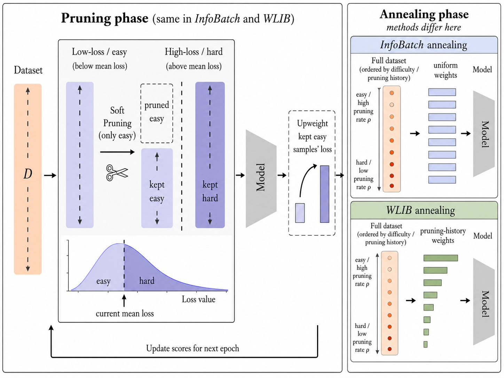
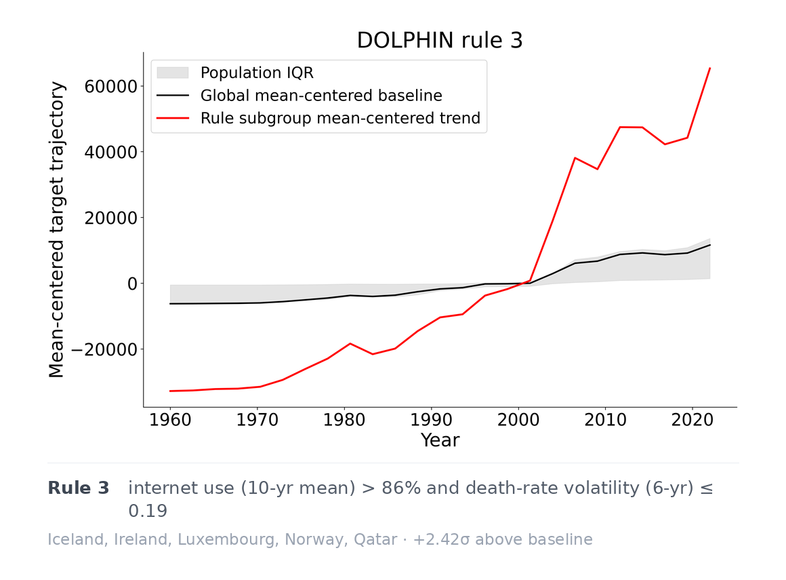
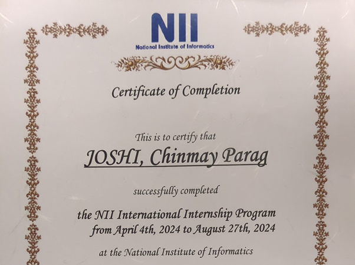
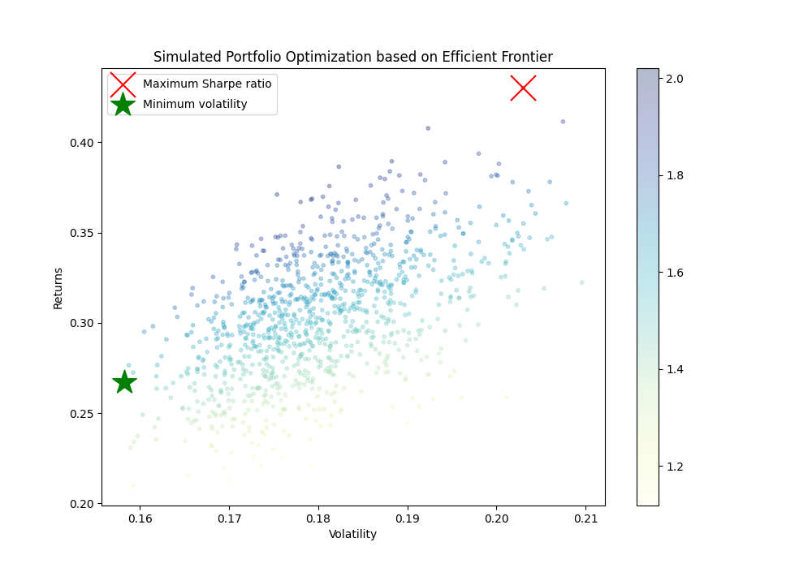

My master's thesis, showing that dynamic data pruning does more than speed up training: by exposing hard, high-risk examples earlier, it lowers how much a model memorizes them and reduces membership-inference vulnerability, at no cost to accuracy. Introduces WLIB, which reuses a sample's pruning history to hold that privacy gain in place through late training. Accepted at the ICML 2026 Workshop on Memorization in Foundation Models; under review at NeurIPS 2026.

An interpretable method for subgroup discovery in longitudinal data: finding groups of entities whose whole trajectory moves differently from the rest, and saying plainly what sets them apart. Unlike standard subgroup discovery, which targets a single value per entity, DOLPHIN scores each entity by how far its trajectory departs from the population baseline, fits a compact random forest to those scores, and reads short Boolean rules from the forest's decision paths, testing each against random subgroups for significance. On World Bank GDP-per-capita and CMIE household-income panels (up to ~9,300 entities and 281,000 observations), the recovered subgroups map to recognizable development and income-composition regimes, each arriving with a human-readable rule and the trajectory that makes it exceptional. Under review at the NFMCP 2026 Workshop (ECML-PKDD).
Code
Research on relightable novel view synthesis from single images using Stable Diffusion. Created a synthetic dataset using Objaverse and Polyhaven.
Code
An end-to-end trading system for the Indian large-caps that answers three questions at once: what to trade, how much, and when. Technical indicators are compressed with PCA to strip out multicollinearity, an LSTM forecasts the trade signals, and an efficient-frontier step sizes each position to maximize the Sharpe ratio at minimum risk. On NIFTY50 the PCA-LSTM beat buy-and-hold by roughly 20%, against about 4% for a plain LSTM. Published at IEEE I2CT 2022.
Code